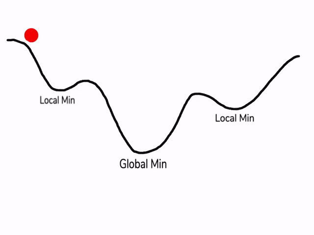

Introduction to Neural Networks
Neural networks are computational models inspired by the human brain. They consist of layers of interconnected nodes (neurons) where each connection has an associated weight. The basic flow in a neural network involves:
- Forward Propagation: Input data passes through the network layers to produce an output.
- Loss Calculation: The output is compared with the actual target to compute the loss.
- Backpropagation: The network adjusts the weights to minimize the loss.
Layers in a Neural Network
A neural network typically has:
- Input Layer: Receives the input data.
- Hidden Layers: Intermediate layers that process the inputs.
- Output Layer: Produces the final output.
Activation Functions
Activation functions introduce non-linearity into the network, allowing it to learn complex patterns. Common activation functions include:
- ReLU (Rectified Linear Unit): ( f(x) = (0, x) )
- Sigmoid: ( f(x) = )
- Tanh: ( f(x) = (x) )
Forward Propagation
During forward propagation, inputs pass through each layer and activation function to produce the final output.
Loss Function
The loss function measures the difference between the predicted output and the actual target. Common loss functions include:
- Mean Squared Error (MSE) for regression tasks.
- Cross-Entropy Loss for classification tasks.
Backpropagation
Backpropagation updates the weights using the gradients of the loss function with respect to the weights.
Introduction to Neural Networks with PyTorch
PyTorch is a popular open-source deep learning framework that offers a flexible and efficient platform for building and training neural networks. This guide introduces the basic concepts of neural networks, including forward propagation, different layers, activation functions, backpropagation, and loss functions, and demonstrates how to implement these concepts using PyTorch.
import torch
import torch.nn as nn
import torch.optim as optim
from sklearn.model_selection import train_test_split
# Define a neural network with two hidden layers
class SimpleNN(nn.Module):
def __init__(self):
super(SimpleNN, self).__init__()
self.fc1 = nn.Linear(10, 50) # First hidden layer
self.relu1 = nn.ReLU()
self.fc2 = nn.Linear(50, 50) # Second hidden layer
self.relu2 = nn.ReLU()
self.fc3 = nn.Linear(50, 1) # Output layer
def forward(self, x):
x = self.fc1(x)
x = self.relu1(x)
x = self.fc2(x)
x = self.relu2(x)
x = self.fc3(x)
return x
# Instantiate the model
model = SimpleNN()
# Generate random input data and targets
inputs = [torch.randn(10) for _ in range(1000)]
targets = [torch.tensor([1.0]) for _ in range(1000)] # Example target
# Split data into training and test sets
train_inputs, test_inputs, train_targets, test_targets = train_test_split(inputs, targets, test_size=0.2)
# Define a loss function and optimizer
criterion = nn.MSELoss()
optimizer = optim.SGD(model.parameters(), lr=0.01)
# Number of epochs
num_epochs = 10
# Training loop
for epoch in range(num_epochs):
total_loss = 0
for input, target in zip(train_inputs, train_targets):
# Forward pass
output = model(input)
loss = criterion(output, target)
# Backward pass and optimization
optimizer.zero_grad()
loss.backward()
optimizer.step()
total_loss += loss.item()
# Print average training loss
print(f'Epoch {epoch+1}/{num_epochs}, Training Loss: {total_loss/len(train_inputs)}')
# Evaluate on test set
test_loss = 0
with torch.no_grad(): # No need to compute gradients for testing
for input, target in zip(test_inputs, test_targets):
output = model(input)
loss = criterion(output, target)
test_loss += loss.item()
# Print average test loss
print(f'Average Test Loss: {test_loss/len(test_inputs)}')Loss Function and Optimization
In machine learning, the loss function (or cost function) measures how well the model’s predictions match the actual target values. The goal of training a neural network is to minimize this loss function.
Local Minimum vs. Global Minimum
- Global Minimum: This is the lowest possible point of the loss function. If we reach this point, the model parameters are optimal, and the model performs best on the training data.
- Local Minimum: These are points where the loss function has a lower value than in its immediate vicinity, but not the lowest possible value. There can be multiple local minima.
Challenges with Local Minima
- Trapped in Local Minima: During training, the optimization algorithm might get trapped in a local minimum, preventing the model from reaching the global minimum.
- Poor Generalization: Models trained in local minima might not generalize well to unseen data.
Why Use the Adam Optimizer?

The Adam (Adaptive Moment Estimation) optimizer is an advanced optimization algorithm that combines the benefits of two other extensions of stochastic gradient descent: Adaptive Gradient Algorithm (AdaGrad) and Root Mean Square Propagation (RMSProp). Here’s why Adam is beneficial:
- Adaptive Learning Rates: Adam adjusts the learning rate for each parameter dynamically based on estimates of lower-order moments. This allows for efficient and effective training.
- Momentum: Adam incorporates the concept of momentum, which helps to smooth out the update process by considering the past gradients, thus potentially avoiding local minima.
- Bias Correction: Adam includes bias-correction mechanisms to ensure that the moment estimates are unbiased, particularly during the initial steps of training.
- Computational Efficiency: Adam is computationally efficient and has low memory requirements, making it suitable for large-scale data and models.
- Robustness: Adam works well with noisy data and sparse gradients, which are common in practical deep learning applications.
General Structure of Constructing and Training a Deep Learning Model
Here are the general steps to build and train a deep learning model:
- Define the Model Architecture
- Specify the type of model (e.g., feedforward neural network, convolutional neural network).
- Define the number of layers and the type of each layer (e.g., fully connected, convolutional, dropout).
- Choose activation functions for each layer (e.g., ReLU, sigmoid).
- Prepare the Data
- Collect and preprocess the data (e.g., normalization, resizing, augmentation).
- Split the data into training, validation, and test sets.
- Define the Loss Function and Optimizer
- Choose a loss function appropriate for the task (e.g., cross-entropy for classification, mean squared error for regression).
- Select an optimization algorithm (e.g., SGD, Adam).
- Implement the Training Loop
- Initialize model parameters.
- For a specified number of epochs:
- Forward Pass: Pass the input data through the model to get the output.
- Compute Loss: Calculate the loss using the model’s output and the actual target values.
- Backward Pass: Compute gradients by backpropagation.
- Update Parameters: Update the model’s parameters using the optimizer.
- Optionally, compute and log metrics on the validation set to monitor training progress.
- Evaluate the Model
- After training, evaluate the model on the test set to assess its performance.
- Fine-tune and Deploy
- Fine-tune the model by adjusting hyperparameters, adding regularization, or using more advanced architectures.
- Once satisfied with the performance, deploy the model for inference on new data.